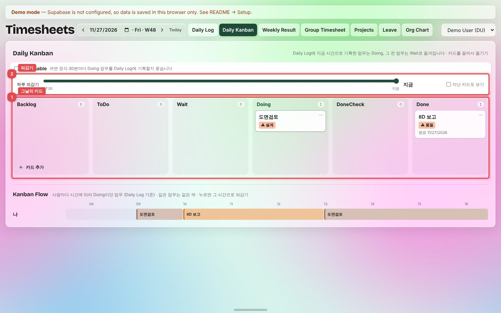
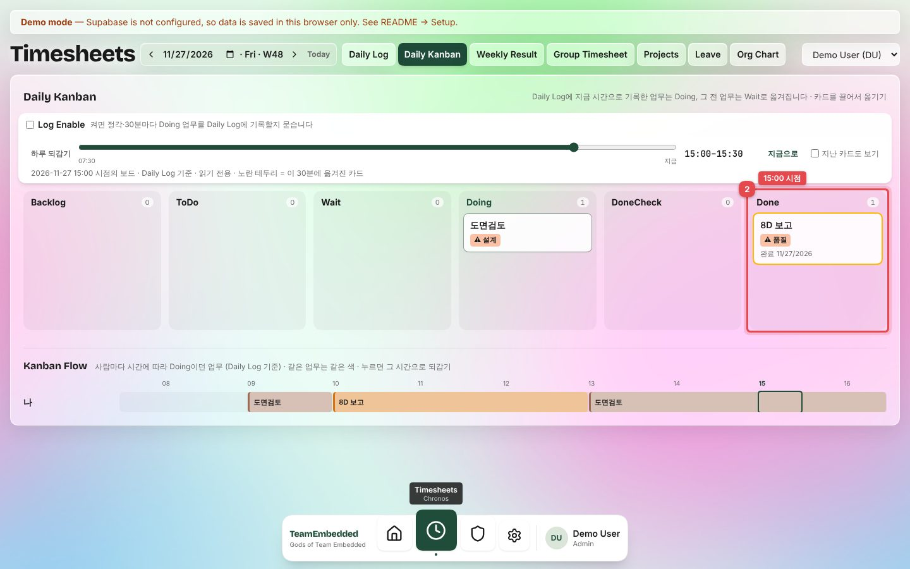
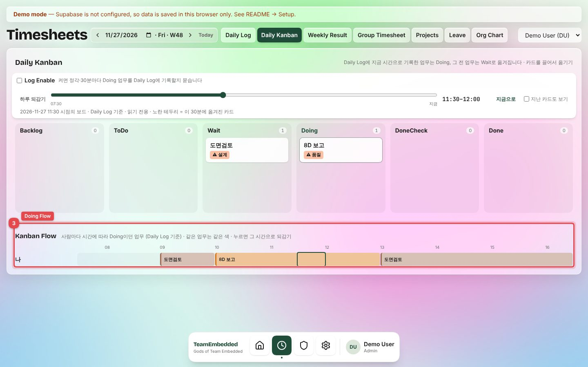
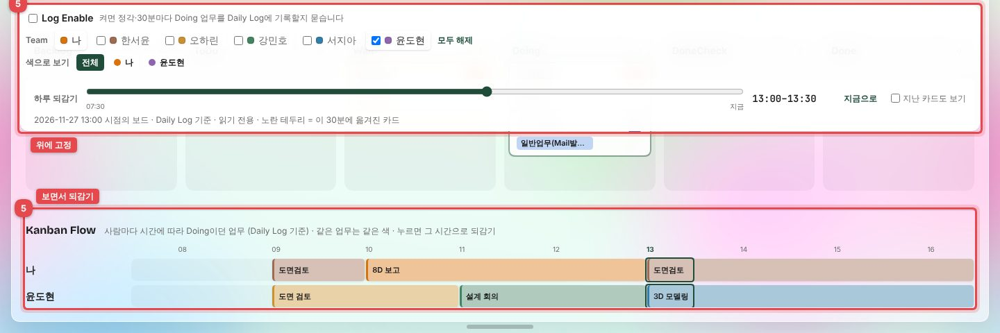

검증 보고서 · E2E
(버그) Daily Kanban은 그날의 내용을 보여 줘야 하는데 지난 데이터가 넘어온다. 칸반에 하루를 30분 간격으로 어떤 일을 Doing으로 했는지 스크롤을 옮기며 블록이 이동하는 것을 보는 UI. 칸반 아래 Kanban Flow: 30분 간격으로 선택된 사용자마다 어떻게 이동했는지 하루 전체 그래프.
| # | 테스트 케이스 | 기대 결과 | 실제 결과 | 판정 근거 (Assertion) | 결과 | 증적 |
|---|---|---|---|---|---|---|
| 1 | 그날의 카드만 (지난 카드는 "지난 카드도 보기"로만) | 오늘 보드: Doing '도면검토', Done '8D 보고', 어제의 '지난주 이슈' 없음; 지난 카드도 보기 → Wait에 '지난주 이슈' | 오늘 Doing [도면검토], Done [8D 보고], Wait [] · 지난 카드 포함 Wait [지난주 이슈] | 칸별 카드 제목, Show earlier cards 체크 전후 | PASS | 화면 1 |
| 2 | 하루 되감기: 30분마다 Daily Log대로, 손으로 옮긴 건 옮긴 시각에 | 09:00 Doing '도면검토'(노란 테두리), 10:00 Doing '8D 보고'·Wait '도면검토', 14:30 Doing '도면검토'·Wait '8D 보고', 15:00 Done '8D 보고'(이 30분에 옮김), 되감기 중 메뉴 0개·끌기 불가 | 범위 0~18 · 09:00(09:00–09:30) Doing [도면검토] 테두리 [도면검토] · 10:00 Doing [8D 보고] Wait [도면검토] · 14:30 Doing [도면검토] Wait [8D 보고] · 15:00 Done [8D 보고] 테두리 [8D 보고] · 메뉴 0, draggable=false | 슬라이더 위치별 칸 제목, data-moved, Options 버튼 수, draggable | PASS | 화면 2 |
| 3 | Kanban Flow: Doing만, 사람마다 한 줄에 업무 블록 · 누르면 그 시간으로 | 나: 도면검토 09:00(2칸) → 8D 보고 10:00(6칸, 점심 포함) → 도면검토 13:00(끝까지 7칸), Wait·Done 같은 다른 칸 정보 없음, 8D 블록의 4번째 칸을 누르면 '11:30–12:00' | 나 [도면검토@18+2,8D 보고@20+6,도면검토@26+7] · 다른 칸 표시 0개 · 누른 뒤 '11:30–12:00' | flow-block 의 data-task·data-start·data-len, data-status 요소 0개, 누른 뒤 replay-time | PASS | 화면 3 |
| 4 | 체크한 팀원도 Flow에 한 줄씩, 되감기에도 함께 | Flow 사람 [나, 윤도현], 윤도현: 도면 검토 09:00 → 설계 회의 11:00 → 3D 모델링 13:00, 11:00 되감기 Doing에 윤도현 '설계 회의' | 사람 [나,윤도현] · 윤도현 [도면 검토@18,설계 회의@22,3D 모델링@26] · 11:00 윤도현 Doing [설계 회의] | flow-person / flow-block, 되감은 보드의 윤도현 블록 | PASS | — |
| 5 | 아래로 내려도 팀원 줄·되감기 슬라이더가 위에 고정 (틀고정처럼) | 페이지를 내린 상태에서 막대 위치 0~20px, Kanban Flow가 화면 안에 보이고, 슬라이더로 13:00 → Flow에 13:00 시각 표시(굵은 테두리) | 내린 거리 317px, 막대 y 8px, Flow y 303~443px, '13:00–13:30', Flow의 시각 표시 2개 | window.scrollY > 0 && kanban-controls.y ∈ [0, 20] && Flow 가 480px 화면 안 && replay-time 13:00 && flow-now 표시 | PASS | 화면 4 |
| 6 | 지난 날짜: 그날 하루가 끝났을 때의 보드 (읽기 전용) | 어제: Doing '지난주 이슈', 오늘 카드 없음, '하루 끝', 안내에 읽기 전용, 메뉴 0개 | Doing [지난주 이슈], 전체 [지난주 이슈], '하루 끝', '2026-11-26 하루가 끝났을 때의 보드 · Daily Log 기준 · 읽기 전용', 메뉴 0 | 칸 제목, replay-time / replay-note, Options 버튼 수 | PASS | — |
| 7 | 페이지 오류 없음 | 0건 | 0건 | pageerror 수 === 0 | PASS | — |
빨간 테두리와 번호는 표의 테스트 케이스 번호입니다. 그 요소를 확인해 판정했습니다.



